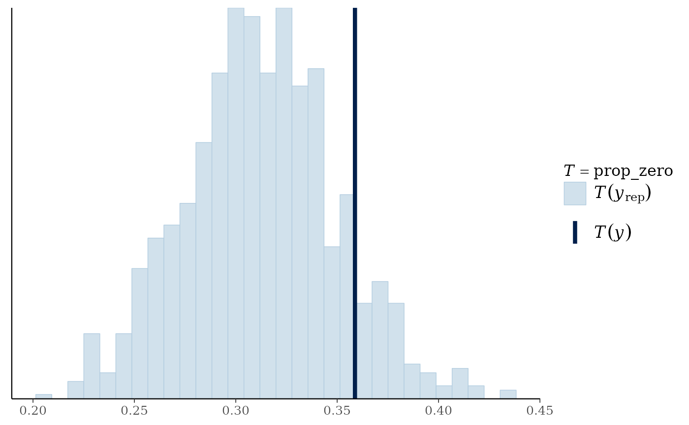
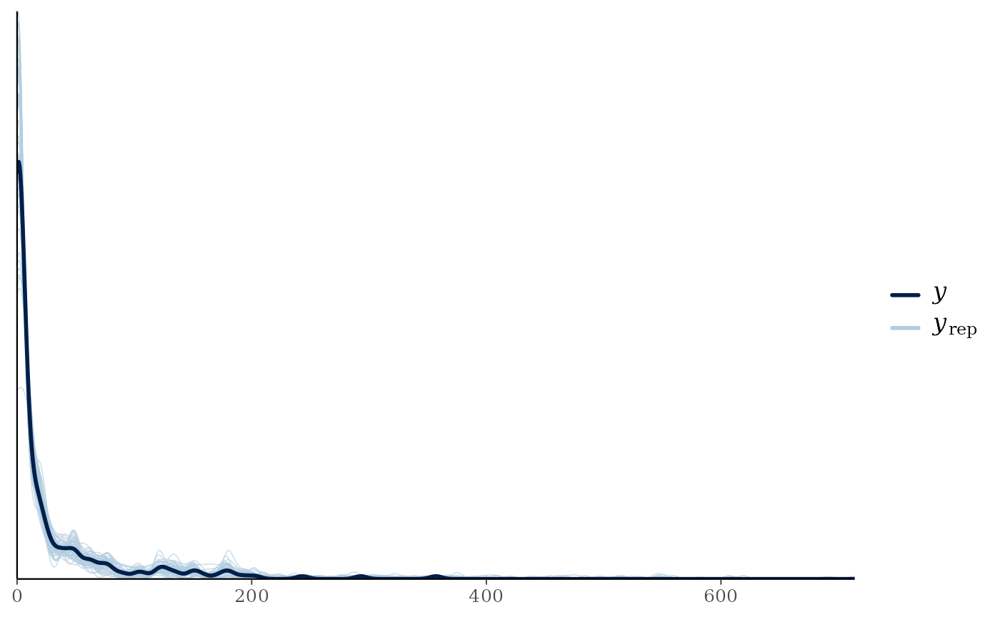
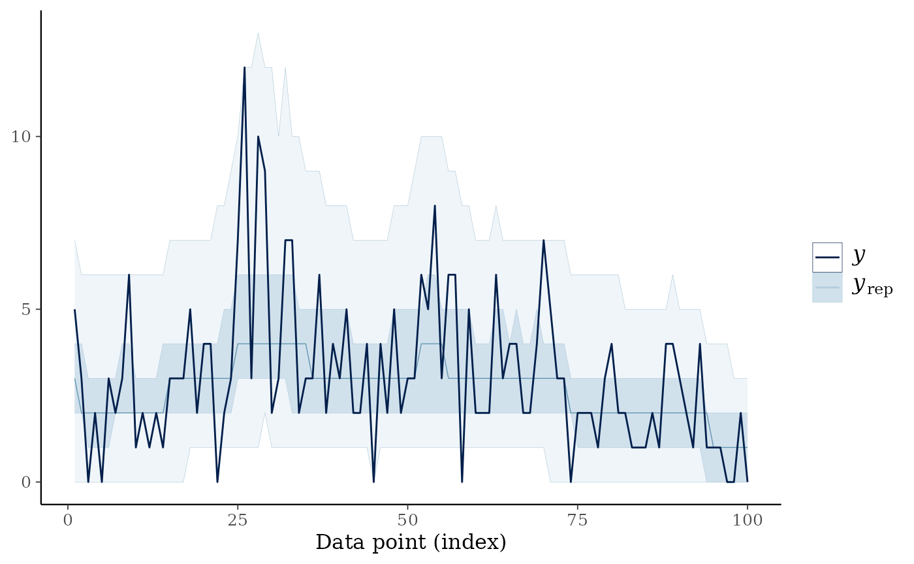

Introduction
The countSTAR package implements a variety of methods to
analyze diverse count-valued data, all based on the idea of Simultaneous
Transformation and Rounding (STAR). The package functionality is broadly
split into three categories: Bayesian estimation of STAR models (Kowal and Canale (2020), Kowal and
Wu (2022)), frequentist/classical estimation
(Kowal and Wu (2021)), and time series analysis using
warped Dynamic Linear Models (King and Kowal (2021)).
We give a brief description of the STAR framework, before diving into
specific examples that show the countSTAR
functionality.
STAR Model Overview
STAR models build upon continuous data models to provide a valid count-valued data-generating process. An example STAR model for linear regression is as follows: \[\begin{align*} y_i &= \mbox{floor}(y_i^*) \\ z_i^* &= \log(y_i^*) \\ z_i^* &= x_i'\beta + \epsilon_i, \quad \epsilon_i \stackrel{iid}{\sim}N(0, \sigma^2) \end{align*}\] The latent data \(y_i^*\) act as a continuous proxy for the count data \(y_i\), which is easier to model yet has a simple mapping via the floor function to the observed data. The latent data \(y_i^*\) are transformed to \(z_i^*\), as in common practice, and modeled using Gaussian linear regression. This model inherits the same structure as before, but the data-generating process is now count-valued.
More generally, STAR models are defined via a rounding operator \(h\), a (known or unknown) transformation \(g\), and a continuous data model \(\Pi_\theta\) with unknown parameters \(\theta\): \[\begin{align*} y &= h(y^*) \quad \mbox{(rounding)}\\ z^* &= g(y^*) \quad \mbox{(transformation)}\\ z^* & \sim \Pi_\theta \quad \mbox{(model)}\\ \end{align*}\] Importantly, STAR models are highly flexible count-valued processes, and provide the capability to model (i) discrete data, (ii) zero-inflation, (iii) over- or under-dispersion, and (iv) bounded or censored data.
We focus on conditionally Gaussian models of the form \[ z^*(x) = \mu_\theta(x) + \epsilon(x), \quad \epsilon(x) \stackrel{iid}{\sim}N(0, \sigma^2) \] where \(\mu_\theta(x)\) is the conditional expectation of the transformed latent data with unknown parameters \(\theta\). Examples include linear, additive, and tree-based regression models.
The Rounding Operator
The rounding operator \(h\) is a
many-to-one function that sets \(y =
j\) whenever \(y^*\in
\mathcal{A}_j\) or equivalently when \(z^*=g(y^*) \in g(\mathcal{A}_j)\) . It
could take many different forms, but generally the floor function, i.e
where \(\mathcal{A}_j := [j, j+1)\)
works well as a default, with the modification \(g(\mathcal{A}_0) := (-\infty, 0)\) so that
\(y = 0\) whenever \(z^* < 0\). This latter modification
ensures that much of the latent space is mapped to zero, and therefore
STAR models can easily account for zero-inflation. Furthermore, when
there is a known upper bound y_max\(=K\) for the data, there is an additional
change to incorporate this structure, namely we let \(g(\mathcal{A}_K) := [g(a_K), \infty)\).
The rounding operator and its inverse are implemented in
countSTAR with the functions a_j() and
round_fun(), although these rarely need to be employed by
the end user. Instead, the only thing that might need to be specified by
the user would be whether an upper bound for the data exists, in which
case there is a simple option of setting y_max in each of
the modeling functions that will then be passed to the rounding
function.
The Transformation Function
There are a variety of options for the transformation function \(g\), ranging from fixed functions to
a-priori data-driven transformations to transformations learned along
with the rest of the model. All models in countSTAR support
three common fixed transformations: log, square root (‘sqrt’), and the
identity transformation (essentially a rounding-only model).
Furthermore, all functions support a set of transformations which are
learned by matching marginal moments of the data \(y\) to the latent \(z\):
-
transformation='pois'uses a moment-matched marginal Poisson CDF -
transformation='neg-bin'uses a moment-matched marginal Negative Binomial CDF -
transformation='np'is a nonparametric transformation estimated from the empirical CDF of \(y\).
Details on the estimation of these transformations can be found in Kowal and Wu (2021). In particular the “np” transformation has proven very effective, especially for heaped data, and is the default across all functions.
Some STAR methods also support ways of learning the transformation alongside the model:
-
transformation='box-cox': the transformation is assumed to belong to the Box-Cox family; the sampler samples the \(\lambda\) parameter -
transformation='ispline': the transformation is modeled as an unknown, monotone function using I-splines. The Robust Adaptive Metropolis (RAM) sampler is used for drawing the parameter of the transformation function. -
transformation='bnp': the transformation is modeled using the Bayesian bootstrap, a Bayesian nonparametric model that incorporates the uncertainty about the transformation into posterior and predictive inference.
These learned transformations are not always available in every function; check the appropriate help page to see what options are supported.
Count-Valued Data: The Roaches Dataset
As an example of complex count-valued data, consider the
roaches data from Gelman and Hill
(2006).
The response variable, \(y_i\), is the
number of roaches caught in traps in apartment \(i\), with \(i=1,\ldots, n = 262\).
# Source: http://mc-stan.org/rstanarm/articles/count.html
#install.packages("rstanarm")
data(roaches, package="rstanarm")
# Roaches:
y = roaches$y
# Function to plot the point mass function:
stickplot = function(y, ...){
js = 0:max(y);
plot(js,
sapply(js, function(js) mean(js == y)),
type='h', lwd=2, ...)
}
stickplot(y, main = 'PMF: Roaches Data',
xlab = 'Roaches', ylab = 'Probability mass')There are several notable features in the data:
- Zero-inflation: 36% of the observations are zeros.
- (Right-) Skewness, which is clear from the histogram and common for (zero-inflated) count data.
- Overdispersion: the sample mean is 26 and the sample variance is 2585.
A pest management treatment was applied to a subset of 158 apartments, with the remaining 104 apartments receiving a control. Additional data are available on the pre-treatment number of roaches, whether the apartment building is restricted to elderly residents, and the number of days for which the traps were exposed. We are interested in modeling how the roach incidence varies with these predictors.
Frequentist inference for STAR models
Frequentist (or classical) estimation and inference for STAR models
is provided by an EM algorithm. Sufficient for estimation is an
estimator function which solves the least squares (or
Gaussian maximum likelihood) problem associated with \(\mu_\theta\)—or in other words, the
estimator that would be used for Gaussian or continuous data.
Specifically, estimator inputs data and outputs a list with
two elements: the estimated coefficients \(\hat \theta\) and the
fitted.values \(\hat
\mu_\theta(x_i) = \mu_{\hat \theta}(x_i)\).
The Classical Linear Model
For many applications, the STAR linear model is often the first
method to try. In countSTAR, the linear model is
implemented with the lm_star function, which aims to mimic
the functionality of lm by allowing users to input a
formula. Standard functions like coef and
fitted can be used on the output to extract coefficients
and fitted values, respectively.
library(countSTAR)
# Select a transformation:
transformation = 'np' # Estimated transformation using empirical CDF
# EM algorithm for STAR (using the log-link)
fit_em = lm_star(y ~ roach1 + treatment + senior + log(exposure2),
data = roaches, transformation = transformation)
# Dimensions:
n = nrow(fit_em$X); p = ncol(fit_em$X)
# Fitted coefficients:
round(coef(fit_em), 3)
#> (Intercept) roach1 treatment senior log(exposure2)
#> 0.035 0.006 -0.285 -0.321 0.216Here the np transformation was used, but other options
are available; see ?lm_star for details.
Based on the fitted STAR linear model, we may further obtain
confidence intervals for the estimated coefficients using
confint:
# Confidence interval for all coefficients
confint(fit_em)
#> 2.5 % 97.5 %
#> (Intercept) -0.137670574 0.207342962
#> roach1 0.004884559 0.007426402
#> treatment -0.487570481 -0.085829669
#> senior -0.548576607 -0.101904626
#> log(exposure2) -0.196892968 0.637103375Similarly, p-values are available using likelihood ratio tests, which can be applied for individual coefficients,
\[ H_0: \beta_j= 0 \quad \mbox{vs} \quad H_1: \beta_j \ne 0 \]
or for joint sets of variables, analogous to a (partial) F-test:
\[
H_0: \beta_1=\ldots=\beta_p = 0, \quad \mbox{vs.} \quad H_1: \beta_j \ne
0 \mbox{ for some } j=1,\ldots,p
\] P-values for all individual coefficients as well as the
p-value for any effects are computed with the
pvals function.
# P-values:
print(pvals(fit_em))
#> (Intercept) roach1 treatment senior
#> 6.973314e-01 1.887407e-18 5.600906e-03 4.862510e-03
#> log(exposure2) Any linear effects
#> 3.072376e-01 9.271134e-20Finally, we can get predictions at new data points (or the training
data) using predict, which actually outputs samples from
the . Optionally, prediction intervals can be estimated using the
(plug-in) predictive distribution at the MLEs (see
?predict.lmstar for details). Note that the “plug-in”
predictive distribution is a crude approximation, and better approaches
for uncertainty quantification are available using the Bayesian
models.
#Compute the predictive draws (just using observed points here)
y_pred = predict(fit_em)Machine Learning Models
In addition to the linear model, countSTAR also has
implementations for STAR models paired with more flexible regression
methods, in particular random forests (randomForest_star())
and generalized boosted machines (gbm_star()). In these
functions, the user directly inputs the set of predictors \(X\) alongside any test points in \(X_{test}\), as can be seen in the example
below
# Select a transformation:
transformation = 'np' # Estimated transformation using empirical CDF
# Construct data matrix
y = roaches$y
X = roaches[, c("roach1", "treatment", "senior", "exposure2")]
#Fit STAR with random forests
fit_rf = randomForest_star(y, X, transformation = transformation)
#Fit STAR with GBM
fit_gbm = gbm_star(y, X, transformation = transformation)For all frequentist models, the functions output log-likelihood values at the MLEs, which allows for a quick comparison of model fit.
In this case, it seems the GBM model has better fit to the data, although this could be further backed up by performing an out-of-sample comparison of the two models.
Bayesian inference for STAR models
For a Bayesian model, STAR requires only an algorithm for initializing and sampling from the posterior distribution under a continuous data model. More specifically, posterior inference under STAR is based on a Gibbs sampler, which augments the aforementioned continuous sampler with a draw from \([z^* | y, \theta]\). When \(\Pi_\theta\) is conditionally Gaussian, \([z^* | y, \theta]\) is a truncated Gaussian distribution.
Linear Model
As an illustration, consider the Bayesian linear regression model
\[\begin{align*}
z_i^* &= x_i'\beta + \epsilon_i, \quad \epsilon_i
\stackrel{iid}{\sim}N(0, \sigma^2) \\
\sigma^2 &\sim \mbox{Gamma}(\alpha=0.001, \beta=0.001) \;.
\end{align*}\] The model is completed by assigning a prior
structure for \(\beta\). The default in
countSTAR is Zellner’s g-prior, which has the most
functionality, but other options are available (namely horseshoe and
ridge priors). The model is estimated using blm_star().
Note that for the Bayesian models in countSTAR, the user
must supply the design matrix \(X\)
(and if predictions are desired, a matrix of predictors at the test
points). We apply this to the roaches data, now using the default
nonparametric transformation.
X = model.matrix(y ~ roach1 + treatment + senior + log(exposure2),
data = roaches)
# Dimensions:
n = nrow(X); p = ncol(X)
fit_blm = blm_star(y = y, X=X, transformation = 'np')By default, the function uses a Gibbs sampler to draw from the
posterior, but in some settings exact inference can be performed (see
Kowal and Wu (2022) for details). To enable this, one
can simply set use_MCMC=FALSE. In either case, the output
of the function should be much the same, with the exception that \(\sigma\) is estimated a priori and thus has
no posterior draws.
Posterior expectations and posterior credible intervals from the model are available as follows:
# Posterior mean of each coefficient:
round(coef(fit_blm),3)
#> (Intercept) roach1 treatment senior log(exposure2)
#> 0.031 0.006 -0.287 -0.323 0.222
# Credible intervals for regression coefficients
ci_all_bayes = apply(fit_blm$post.beta,
2, function(x) quantile(x, c(.025, .975)))
# Rename and print:
rownames(ci_all_bayes) = c('Lower', 'Upper')
print(t(round(ci_all_bayes, 3)))
#> Lower Upper
#> (Intercept) -0.148 0.205
#> roach1 0.005 0.008
#> treatment -0.495 -0.080
#> senior -0.557 -0.098
#> log(exposure2) -0.194 0.653We may further evaluate the model based on posterior diagnostics and posterior predictive checks on the simulated versus observed proportion of zeros. Posterior predictive checks are easily visualized using the bayesplot package.
# MCMC diagnostics for posterior draws of the regression coefficients
plot(as.ts(fit_blm$post.beta), main = 'Trace plots', cex.lab = .75)
# (Summary of) effective sample sizes across coefficients:
getEffSize(fit_blm$post.beta)
#> Min. 1st Qu. Median Mean 3rd Qu. Max.
#> 3541 3635 4036 3935 4197 4267
# Posterior predictive check using bayesplot
suppressMessages(library(bayesplot))
prop_zero <- function(y) mean(y == 0)
(ppc_stat(y=roaches$y, yrep=fit_blm$post.pred, stat = "prop_zero"))
BART STAR
One of the most flexible model options is to use Bayesian Additive Regression Trees (BART; Chipman, George, and McCulloch (2012)) as the latent regression model:
#Get the model matrix of predictors (no intercept necessary)
X = model.matrix(y ~ -1 + roach1 + treatment + senior + exposure2,
data = roaches)
fit_bart = bart_star(y = y, X=X, transformation = 'np')
#> [1] "Burn-In Period"
#> [1] "16.53 seconds remaining"
#> [1] "14.33 seconds remaining"
#> [1] "Starting sampling"
#> [1] "17.46 seconds remaining"
#> [1] "13.66 seconds remaining"
#> [1] "8.52 seconds remaining"
#> [1] "3.64 seconds remaining"
#> [1] "Total time: 23 seconds"Once again, we can perform posterior predictive checks. This time we plot the densities.
ppc_dens_overlay(y=roaches$y, yrep=fit_bart$post.pred[1:50,])
With all Bayesian models, pointwise log-likelihoods and WAIC values are outputted for model comparison. Using this information, we can see the BART STAR model seems to have a better fit than the linear model.
Other Models
countSTAR also implements Bayesian additive models. With
the function bam_star(), we can specify covariates to be
modeled linearly and others to be modeled non-linearly using spline
bases. As a word of warning, the additive models do take significantly
longer to fit. For exploring the relationship between one predictor and
count outcome \(y\), one can also use
spline regression as implemented in spline_star(). See the
appropriate help pages for examples on how to run the models.
Count Time Series Modeling: warpDLM
Up to this point, all of the attention has focused on static regression where the data does not depend on time. However, the ideas of simultaneous transformation and rounding were extended to the time series domain in King and Kowal (2021). In that work, we proposed linking time-dependent count data \(y_t\) to a powerful time series framework known as Dynamic Linear Models (DLMs). A DLM is defined by two equations: (i) the observation equation, which specifies how the observations are related to the latent state vector and (ii) the state evolution equation, which describes how the states are updated in a Markovian fashion. More concretely, we represent it in the following form: \[\begin{align*} z_t &= F_t \theta_t + v_t, \quad v_t \sim N_n(0, V_t) \\ \theta_t &= G_t \theta_{t-1} + w_t, \quad w_t \sim N_p( 0, W_t) \end{align*}\] for \(t=1,\ldots, T\), where \(\{ v_t, w_t\}_{t=1}^T\) are mutually independent and \(\theta_0 \sim N_p(a_0, R_0)\).
Of course, given the Gaussian assumptions of the model, a DLM alone is not appropriate for count data. Thus, a warping operation (the simultaneous transformation and rounding) is applied to the DLM, resulting in the count time series framework known as a warped DLM (warpDLM). More explicitly, it can be written as: \[\begin{align*} y_t &= h \circ g^{-1}(z_t) \\ \{z_t\}_{t=1}^T &\sim \text{DLM} \end{align*}\]
The DLM form shown earlier is very general. To keep things simple,
countSTAR implements only a few options for the DLM, namely
the local level model and the local linear trend model. A local level
model (also known as a random walk with noise model) has a univariate
state \(\theta_t:=\mu_t\), and the DLM
equations are simply \[\begin{align*}
z_t &= \mu_t + v_t, \quad v_t \sim N(0, V) \\
\mu_t &= \mu_{t-1} + w_t, \quad w_t \sim N(0, W)
\end{align*}\] The local linear trend model extends the local
level model, incorporating a time varying drift \(\nu_t\) in the dynamics. It is often
described in the following three equation format: \[\begin{align*}
z_t &= \mu_t + v_t, \quad v_t \sim N(0, V) \\
\mu_t &= \mu_{t-1} + \nu_{t-1} + w_{\mu,t}, \quad w_{\mu,t}
\sim N( 0, W_
\mu) \\
\nu_t &= \nu_{t-1} + w_{\nu,t}, \quad w_{\nu,t} \sim N( 0,
W_\nu)
\end{align*}\] This can in turn be recast into the general
two-equation DLM form. Namely, if we let \(\theta_t:=(\mu_t, \nu_t)\), the local
linear trend is written as
\[\begin{align*} z_t & = \begin{pmatrix} 1 & 0 \end{pmatrix} \begin{pmatrix} \mu_t \\ \nu_t \end{pmatrix} + v_t, \quad v_t \sim N(0, V) \\ \begin{pmatrix} \mu_t \\ \nu_t \end{pmatrix} & = \begin{bmatrix} 1 & 1 \\ 0 & 1 \end{bmatrix} \begin{pmatrix} \mu_{t-1} \\ \nu_{t-1} \end{pmatrix} + \boldsymbol{w_t}, \quad \boldsymbol{w_t} \sim N\begin{pmatrix} \boldsymbol{0}, \begin{bmatrix} W_ \mu & 0 \\ 0 & W_\nu \end{bmatrix} \end{pmatrix} \end{align*}\]
These two common forms have a long history and are also referred to
as structural time series models (implemented in base R via
StructTS()). With countSTAR, warpDLM time
series modeling is accomplished via the warpDLM() function.
In the below, we apply the model to a time series dataset included in
base R concerning yearly numbers of important discoveries from 1860 to
1959 (?discoveries for more information).
#Visualize the data
plot(discoveries)
#Fit the model
warpfit <- warpDLM(y=discoveries, type="trend")
#> [1] "Time taken: 65.912 seconds"Once again, we can check fit using posterior predictive checks. The median of the posterior predictive draws can act as a sort of count-valued smoother of the time series.
ppc_ribbon(y=as.vector(discoveries), yrep=warpfit$post_pred)